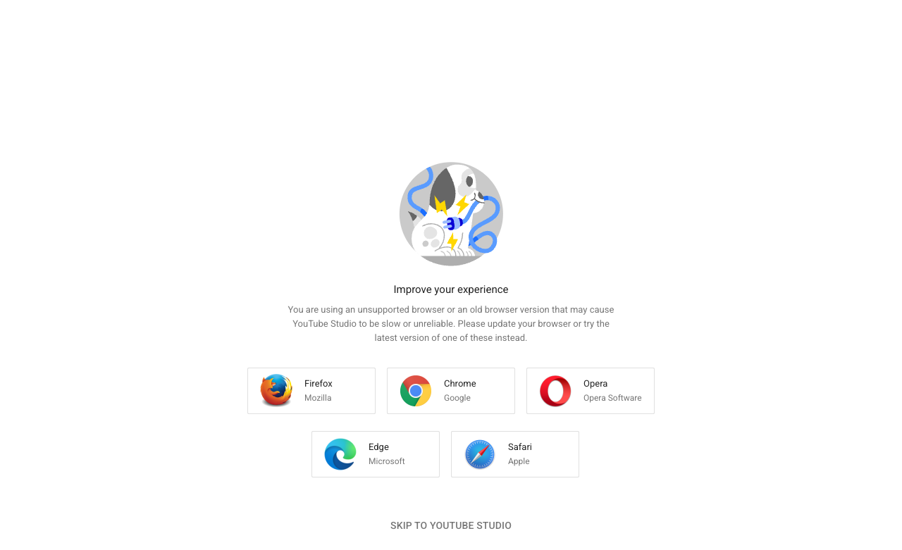
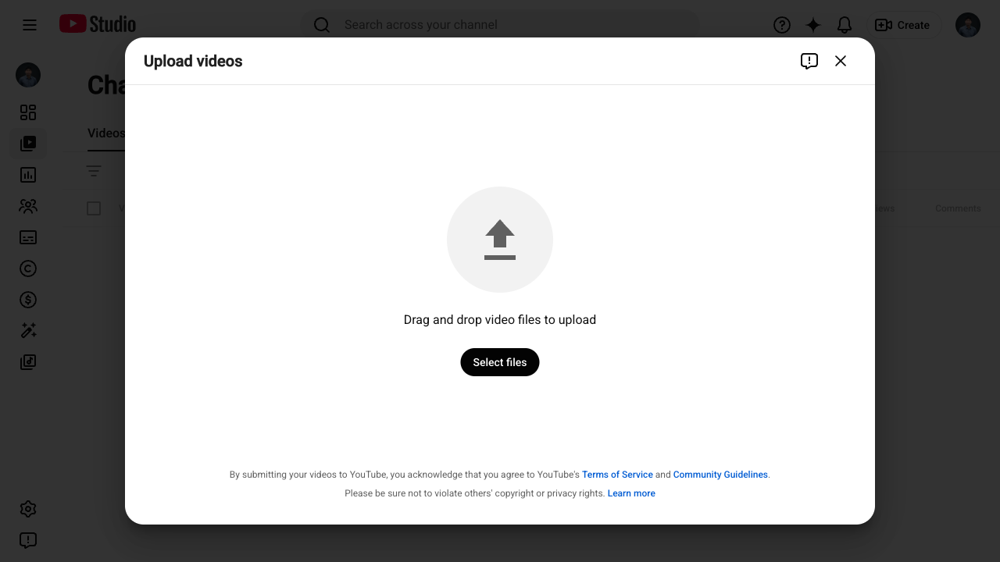

结论
YouTube 已按腾讯视频同规格接入平台控制面，并完成真实任务执行闭环验证。平台侧任务可从控制面触发执行，进入真实上传流程并最终发布成功，任务状态回写为 succeeded。
- 已通过：YouTube 账号登录态落盘、cookie 有效性校验、平台任务执行、真实发布、任务回写
- 已规避：YouTube Studio 在 headless 下出现 “unsupported browser” 导致上传页不渲染上传控件
- 已记录：如果网络环境需要代理，可使用
YT_PROXY环境变量注入
验收范围与产物
| 模块 | 目标 | 结果 | 说明 |
|---|---|---|---|
| 前端主线接入 | 账号页可创建 YouTube；发布页出现可见性/播放列表/缩略图字段；payload 入库 | 通过 | 新增平台选项 youtube 与字段 visibility/playlist/thumbnail_file。 |
| 账号登录与 check | 交互式登录（Google/2FA）后生成 storage_state 文件，并能稳定判定有效 | 通过 | cookie 校验放宽为“未被踢到登录页且仍在 studio 域名下即有效”。 |
| 平台任务执行 | 从控制面触发任务执行，生成 task_run，正确回写状态 | 通过 | 任务执行成功回写 succeeded；失败会记录 error_type。 |
| 真实上传与发布 | 上传 demo 视频，设置标题/简介/可见性，完成发布提交 | 通过 | 发布完成（unlisted）：https://youtu.be/qqsBWZhPpQA |
关键修复点
1) cookie 校验过严导致假 invalid
原逻辑仅当 URL 包含 /channel/ 才认为有效；实际部分账号进入 Studio 后落点为 https://studio.youtube.com/，导致误判。
修复：只要未跳转到 accounts.google.com 且仍在 studio.youtube.com 域名下，即视为 cookie 有效。
2) 平台构造 YouTube Video Request 传参错误
平台视频请求的 common 字段包含 publish_date，但 YouTubeVideoUploadRequest dataclass 不包含该参数，导致任务立即失败。
修复：YouTube 分支构造 request 时移除 publish_date。
3) headless 模式下 YouTube Studio “unsupported browser”
headless 打开 https://www.youtube.com/upload 时会被引导到 Studio 的 “unsupported browser / old version” 提示页，上传控件不会渲染，从而卡在等待 input[type=file]。
修复：YouTube 上传强制使用 headed（非 headless）模式执行。
真实执行证据
平台服务日志关键片段（节选）：
INFO: 🎬 开始上传: demo.mp4 INFO: ✍️ 填写标题 INFO: ✍️ 填写简介 INFO: 🌐 设置可见性 = unlisted INFO: 📤 等待上传完成（传完才发布）… SUCCESS: 🥳 发布完成（unlisted） https://youtu.be/qqsBWZhPpQA
页面取证截图（调试用）
用于说明：headless 访问 upload 可能会落到 Studio 的“浏览器不支持”提示页，而 headed 可正常出现上传框。
| 截图 | 含义 |
|---|---|
|
 |
headless 下可能显示“unsupported browser”，导致上传控件缺失。 |
|
 |
headed 下可见上传对话框与 input[type=file]，流程可继续。 |
运行与环境约束
- 登录态文件：
cookies/youtube_real_acceptance_youtube.json - 必须具备 Chrome（Playwright channel=chrome），否则登录/上传无法启动。
- 若需要代理：可设置环境变量
YT_PROXY（例如http://127.0.0.1:7890）。 - YouTube 上传默认使用 headed 模式（避免 headless 被 Studio 误判为不支持浏览器）。
涉及改动文件
sau_frontend/src/constants/options.js（新增 YouTube 平台选项与可见性选项）sau_frontend/src/views/PublishWorkspacePage.vue（YouTube 可见性/播放列表/缩略图字段与 payload 映射）conf.py（支持通过环境变量注入YT_PROXY）uploader/youtube_uploader/main.py（cookie 校验放宽、引入代理、强制 headed 上传）sau_platform/service.py（YouTube 请求构造移除publish_date）